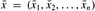

|
|
< Day Day Up > |
|
In this section, we first describe how to test if a linear program is feasible, and if it is, how to produce a slack form for which the basic solution is feasible. We conclude by proving the fundamental theorem of linear programming, which says that the SIMPLEX procedure always produces the correct result.
In Section 29.3, we assumed that we had a procedure INITIALIZE-SIMPLEX that determines whether a linear program has any feasible solutions, and if it does, gives a slack form for which the basic solution is feasible. We describe this procedure here.
A linear program can be feasible, yet the initial basic solution may not be feasible. Consider, for example, the following linear program:
| (29.105) |
subject to
| (29.108) |
If we were to convert this linear program to slack form, the basic solution would set x1 = 0 and x2 = 0. This solution violates constraint (29.107), and so it is not a feasible solution. Thus, INITIALIZE-SIMPLEX cannot just return the obvious slack form. By inspection, it is not clear whether this linear program even has any feasible solutions. In order to determine whether it does, we can formulate an auxiliary linear program. For this auxiliary linear program, we will be able to find (with a little work) a slack form for which the basic solution is feasible. Furthermore, the solution of this auxiliary linear program will determine whether the initial linear program is feasible and if so, it will provide a feasible solution with which we can initialize SIMPLEX.
Let L be a linear program in standard form, given as in (29.16)-(29.18). Let Laux be the following linear program with n + 1 variables:
| (29.109) |
subject to
| (29.111) |
Then L is feasible if and only if the optimal objective value of Laux is 0.
Proof Suppose that L has a feasible solution . Then the solution  combined with
combined with  is a feasible solution to Laux with objective value 0. Since x0 ≥ 0 is a constraint of Laux and the objective function is to maximize -x0, this solution must be optimal for Laux.
is a feasible solution to Laux with objective value 0. Since x0 ≥ 0 is a constraint of Laux and the objective function is to maximize -x0, this solution must be optimal for Laux.
Conversely, suppose that the optimal objective value of Laux is 0. Then , and the values of the remaining variables satisfy the constraints of L.
We now describe our strategy to find an initial basic feasible solution for a linear program L in standard form:
INITIALIZE-SIMPLEX(A, b, c) 1 let l be the index of the minimum bi 2 if bl ≥ 0 ▹Is the initial basic solution feasible? 3 then return ({1, 2, ..., n}, {n + 1, n + 2, ..., n + m}, A, b, c, 0) 4 form Laux by adding -x0 to the left-hand side of each equation and setting the objective function to -x0 5 let (N, B, A, b, c, v) be the resulting slack form for Laux 6 ▹ Laux has n + 1 nonbasic variables and m basic variables. 7 (N, B, A, b, c, v) ← PIVOT(N, B, A, b, c, v, l, 0) 8 ▹ The basic solution is now feasible for Laux. 9 iterate the while loop of lines 2-11 of SIMPLEX until an optimal solution to Laux is found 10 if the basic solution sets11 then return the final slack form with x0 removed and the original objective function restored 12 else return "infeasible"
INITIALIZE-SIMPLEX works as follows. In lines 1-3, we implicitly test the basic solution to the initial slack form for L given by N = {1, 2, ..., n}, B = {n + 1, n + 2, ..., n + m}, for all i ∈ B, and for all j ∈ N. (Creating the slack form requires no explicit effort, as the values of A, b, and c are the same in both slack and standard forms.) If this basic solution is feasible-that is, for all i ∈ N ∪ B-then the slack form is returned. Otherwise, in line 4, we form the auxiliary linear program Laux as in Lemma 29.11. Since the initial basic solution to L is not feasible, the initial basic solution to the slack form for Laux will not be feasible either. In line 7, therefore, we perform one call of PIVOT, with x0 entering and xl leaving, where the index l is chosen in line 1 to be the index of the most negative bi. We shall see shortly that the basic solution resulting from this call of PIVOT will be feasible. Now that we have a slack form for which the basic solution is feasible, we can, in line 9, repeatedly call PIVOT to fully solve the auxiliary linear program. As the test in line 10 demonstrates, if we find an optimal solution to Laux with objective value 0, then in line 11, we create a slack form for L for which the basic solution is feasible. To do so, we delete all x0 terms from the constraints and restore the original objective function for L. The original objective function may contain both basic and nonbasic variables. Therefore, in the objective function we replace each basic variable by the right-hand side of its associated constraint. On the other hand, if in line 10 we discover that the original linear program L is infeasible, we return this information in line 12.
We now demonstrate the operation of INITIALIZE-SIMPLEX on the linear program (29.105)-(29.108). This linear program is feasible if we can find nonnegative values for x1 and x2 that satisfy inequalities (29.106) and (29.107). Using Lemma 29.11, we formulate the auxiliary linear program
| (29.112) |
subject to
| (29.113) |
| (29.114) |
By Lemma 29.11, if the optimal objective value of this auxiliary linear program is 0, then the original linear program has a feasible solution. If the optimal objective value of this auxiliary linear program is positive, then the original linear program does not have a feasible solution.
We write this linear program in slack form, obtaining
|
z |
= |
- |
x0 |
|||||
|
x3 |
= |
2 |
- |
2x1 |
+ |
x2 |
+ |
x0 |
|
x4 |
= |
-4 |
- |
x1 |
+ |
5x2 |
+ |
x0. |
We are not out of the woods yet, because the basic solution, which would set x4 = -4, is not feasible for this auxiliary linear program. We can, however, with one call to PIVOT, convert this slack form into one in which the basic solution is feasible. As line 7 indicates, we choose x0 to be the entering variable. In line 1, we choose as the leaving variable x4, which is the basic variable whose value in the basic solution is most negative. After pivoting, we have the slack form
|
z |
= |
-4 |
- |
x1 |
+ |
5x2 |
- |
x4 |
|
x0 |
= |
4 |
+ |
x1 |
- |
5x2 |
+ |
x4 |
|
x3 |
= |
6 |
- |
x1 |
- |
4x2 |
+ |
x4. |
The associated basic solution is (x0, x1, x2, x3, x4) = (4, 0, 0, 6, 0), which is feasible. We now repeatedly call PIVOT until we obtain an optimal solution to Laux. In this case, one call to PIVOT with x2 entering and x0 leaving yields
This slack form is the final solution to the auxiliary problem. Since this solution has x0 = 0, we know that our initial problem was feasible. Furthermore, since x0 = 0, we can just remove it from the set of constraints. We can then use the original objective function, with appropriate substitutions made to include only nonbasic variables. In our example, we get the objective function
Setting x0 = 0 and simplifying, we get the objective function
and the slack form
This slack form has a feasible basic solution, and we can return it to procedure SIMPLEX.
We now formally show the correctness of INITIALIZE-SIMPLEX.
If a linear program L has no feasible solution, then INITIALIZE-SIMPLEX returns "infeasible." Otherwise, it returns a valid slack form for which the basic solution is feasible.
Proof First suppose that the linear program L has no feasible solution. Then by Lemma 29.11, the optimal objective value of Laux, defined in (29.109)-(29.111), is nonzero, and by the nonnegativity constraint on x0, an optimal solution must have a negative objective value. Furthermore, this objective value must be finite, since setting xi = 0, for i = 1, 2, ..., n, and is feasible, and this solution has objective value . Therefore, line 9 of INITIALIZE-SIMPLEX will find a solution with a negative objective value. Let be the basic solution associated with the final slack form. We cannot have , because then Laux would have objective value 0, contradicting the fact that the objective value is negative. Thus the test in line 10 results in "infeasible" being returned in line 12.
Suppose now that the linear program L does have a feasible solution. From Exercise 29.3-3, we know that if bi ≥ 0 for i = 1, 2, ..., m, then the basic solution associated with the initial slack form is feasible. In this case, lines 2-3 will return the slack form associated with the input. (There is not much that has to be done to convert the standard form to slack form, since A, b, and c are the same in both.)
In the remainder of the proof, we handle the case in which the linear program is feasible but we do not return in line 3. We argue that in this case, lines 4-9 find a feasible solution to Laux with objective value 0. First, by lines 1-2, we must have
bl < 0,
and
In line 7, we perform one pivot operation in which the leaving variable xl is the left-hand side of the equation with minimum bi, and the entering variable is x0, the extra added variable. We now show that after this pivot, all entries of b are nonnegative, and hence the basic solution to Laux is feasible. Letting be the basic solution after the call to PIVOT, and letting and be values returned by PIVOT, Lemma 29.1 implies that
The call to PIVOT in line 7 has e = 0, and by (29.110), we have that
(Note that ai0 is the coefficient of x0 as it appears in (29.110), not the negation of the coefficient, because Laux is in standard rather than slack form.) Since l ∈ B, we also have that ale = -1. Thus, bl/ale > 0, and so . For the remaining basic variables, we have
|
|
(by equation (29.116)) |
||
|
= |
bi - aie(bl/ale) |
(by line 2 of PIVOT) |
|
|
= |
bi - bl |
(by equation (29.117) and ale = -1) |
|
|
≥ |
0 |
(by inequality (29.115)), |
|
which implies that each basic variable is now nonnegative. Hence the basic solution after the call to PIVOT in line 7 is feasible. We next execute line 9, which solves Laux. Since we have assumed that L has a feasible solution, Lemma 29.11 implies that Laux has an optimal solution with objective value 0. Since all the slack forms are equivalent, the final basic solution to Laux must have , and after removing x0 from the linear program, we obtain a slack form that is feasible for L. This slack form is then returned in line 10.
We conclude this chapter by showing that the SIMPLEX procedure works. In particular, any linear program either is infeasible, is unbounded, or has an optimal solution with a finite objective value, and in each case, SIMPLEX will act appropriately.
Any linear program L, given in standard form, either
has an optimal solution with a finite objective value,
is infeasible, or
is unbounded.
If L is infeasible, SIMPLEX returns "infeasible." If L is unbounded, SIMPLEX returns "unbounded." Otherwise, SIMPLEX returns an optimal solution with a finite objective value.
Proof By Lemma 29.12, if linear program L is infeasible, then SIMPLEX returns "infeasible." Now suppose that the linear program L is feasible. By Lemma 29.12, INITIALIZE-SIMPLEX returns a slack form for which the basic solution is feasible. By Lemma 29.7, therefore, SIMPLEX either returns "unbounded" or terminates with a feasible solution. If it terminates with a finite solution, then Theorem 29.10 tells us that this solution is optimal. On the other hand, if SIMPLEX returns "un-bounded," Lemma 29.2 tells us the linear program L is indeed unbounded. Since SIMPLEX always terminates in one of these ways, the proof is complete.
Show that when INITIALIZE-SIMPLEX runs the main loop of SIMPLEX, "unbounded" will never be returned.
Suppose that we are given a linear program L in standard form, and suppose that for both L and the dual of L, the basic solutions associated with the initial slack forms are feasible. Show that the optimal objective value of L is 0.
Suppose that we allow strict inequalities in a linear program. Show that in this case, the fundamental theorem of linear programming does not hold.
Solve the following linear program using SIMPLEX:
|
maximize |
x1 |
+ |
3x2 | ||
|
subject to | |||||
|
-x1 |
+ |
x2 |
≤ |
-1 |
|
|
-2x1 |
- |
2x2 |
≤ |
-6 |
|
|
-x1 |
+ |
4x2 |
≤ |
2 |
|
|
x1, x2 |
≥ |
0. |
|||
Consider the following 1-variable linear program, which we call P:
|
maximize |
t x | ||
|
subject to | |||
|
r x |
≤ |
s |
|
|
x |
≥ |
0, |
where r, s, and t are arbitrary real numbers. Let D be the dual of P.
State for which values of r, s, and t you can assert that
Both P and D have optimal solutions with finite objective values.
P is feasible, but D is infeasible.
D is feasible, but P is infeasible.
Neither P nor D is feasible.
Given a set of m linear inequalities on n variables x1, x2, ..., xn, the linear-inequality feasibility problem asks if there is a setting of the variables that simultaneously satisfies each of the inequalities.
Show that if we have an algorithm for linear programming, we can use it to solve the linear-inequality feasibility problem. The number of variables and constraints that you use in the linear-programming problem should be polynomial in n and m.
Show that if we have an algorithm for the linear-inequality feasibility problem, we can use it to solve a linear-programming problem. The number of variables and linear inequalities that you use in the linear-inequality feasibility problem should be polynomial in n and m, the number of variables and constraints in the linear program.
Complementary slackness describes a relationship between the values of primal variables and dual constraints and between the values of dual variables and primal constraints. Let  be an optimal solution to a primal linear program given in (29.16)-(29.18), and let
be an optimal solution to a primal linear program given in (29.16)-(29.18), and let  be the optimal solution to the dual linear program given in (29.86)-(29.88). Complementary slackness states that the following conditions are necessary and sufficient for and to be optimal:
be the optimal solution to the dual linear program given in (29.86)-(29.88). Complementary slackness states that the following conditions are necessary and sufficient for and to be optimal:
and
Verify that complementary slackness holds for the linear program in lines (29.56)-(29.60).
Prove that complementary slackness holds for any primal linear program and its corresponding dual.
Prove that a feasible solution to a primal linear program given in lines (29.16)-(29.18) is optimal if and only if there are values such that
is a feasible solution to the dual linear program given in (29.86)-(29.88),
whenever , and
whenever .
An integer linear-programming problem is a linear-programming problem with the additional constraint that the variables x must take on integral values. Exercise 34.5-3 shows that just determining whether an integer linear program has a feasible solution is NP-hard, which means that there is unlikely to be a polynomial-time algorithm for this problem.
Show that weak duality (Lemma 29.8) holds for an integer linear program.
Show that duality (Theorem 29.10) does not always hold for an integer linear program.
Given a primal linear program in standard form, let us define P to be the optimal objective value for the primal linear program, D to be the optimal objective value for its dual, IP to be the optimal objective value for the integer version of the primal (that is, the primal with the added constraint that the variables take on integer values), and ID to be the optimal objective value for the integer version of the dual. Show that
IP ≤ P = D ≤ ID.
|
|
< Day Day Up > |
|